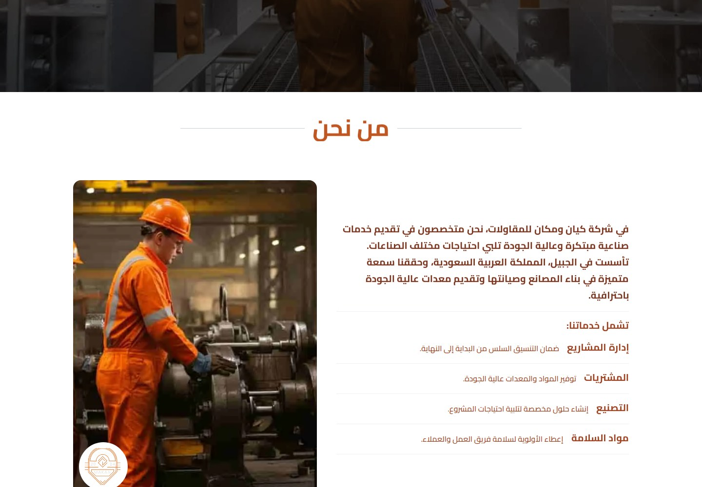
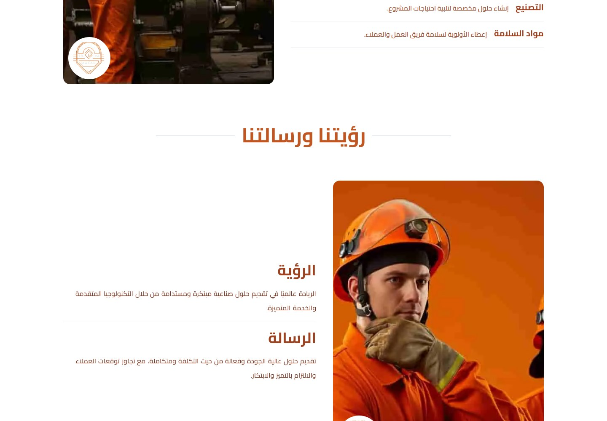
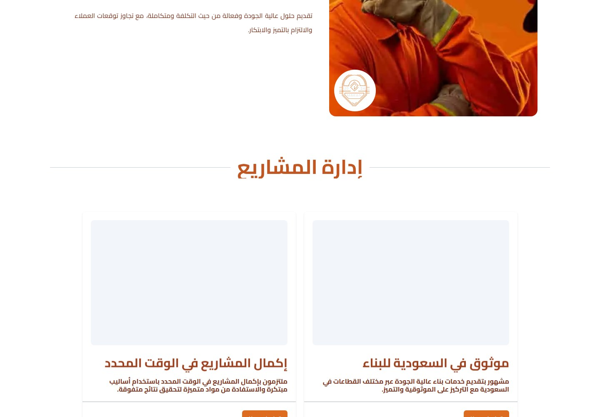
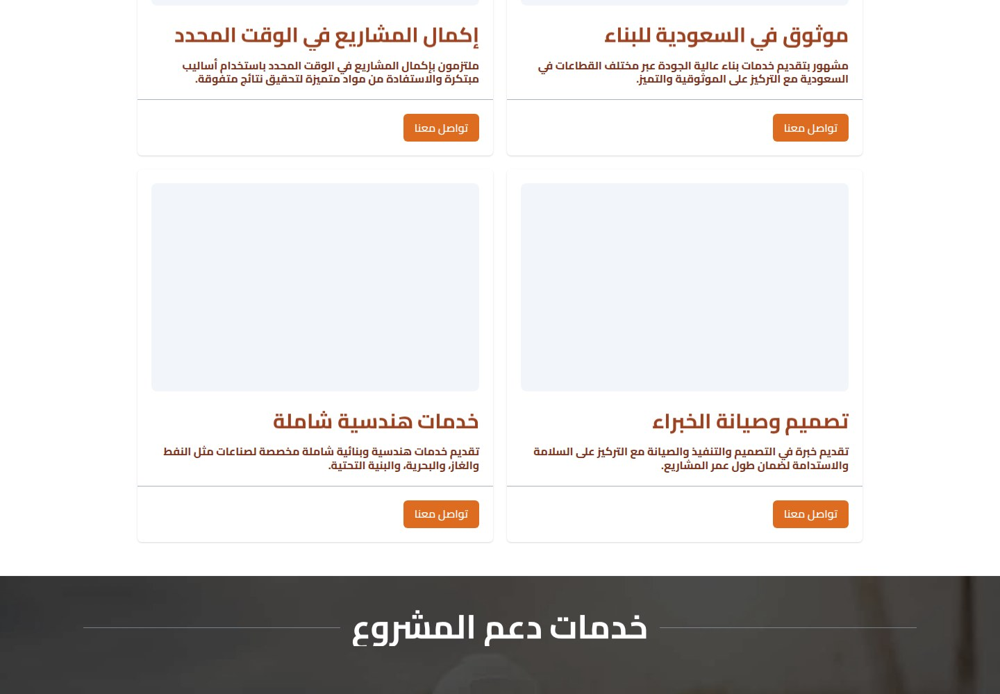
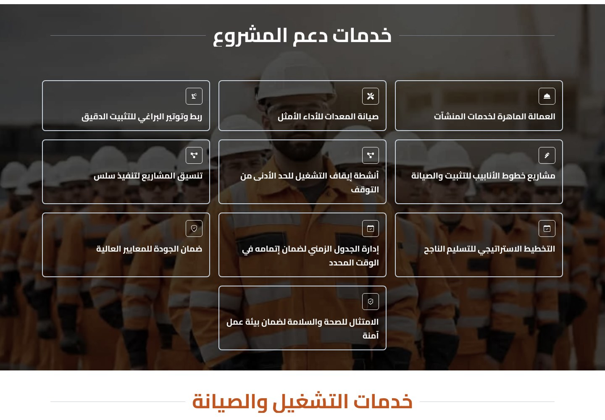
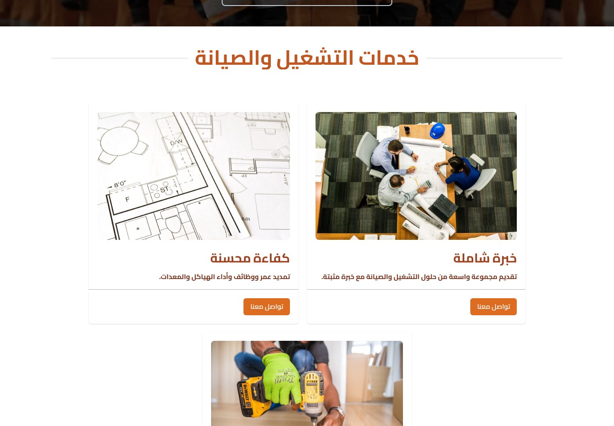
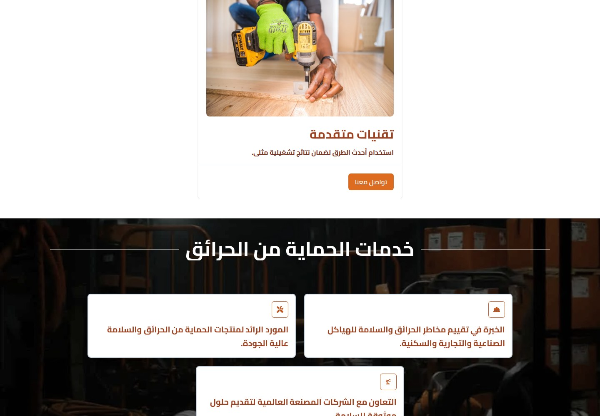
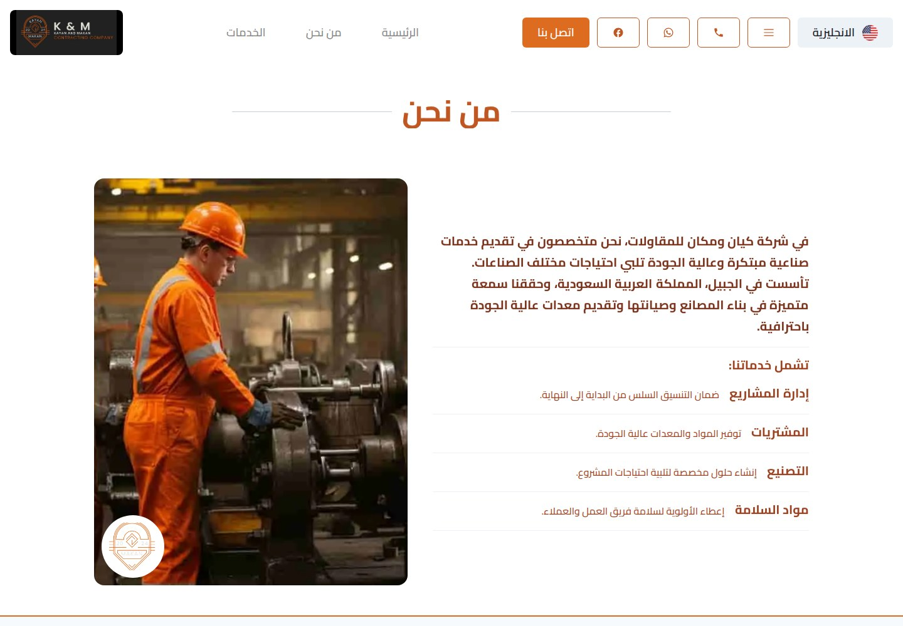
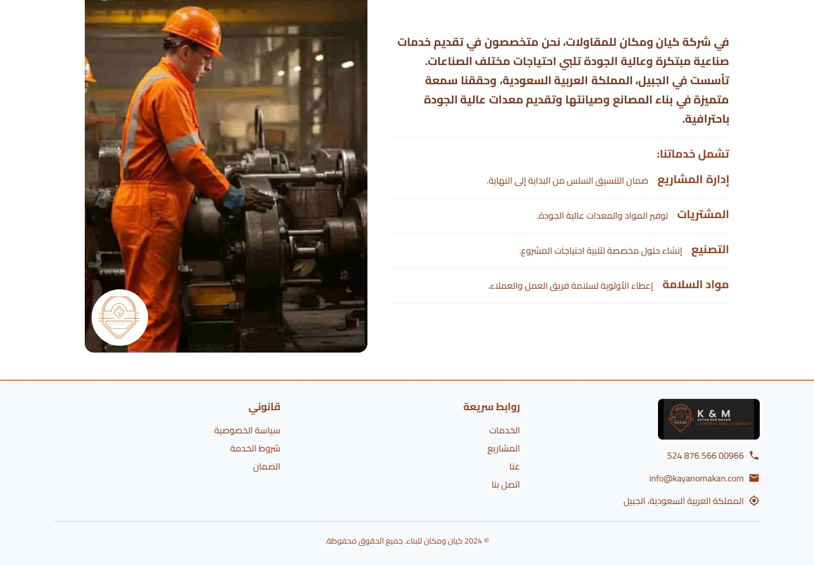
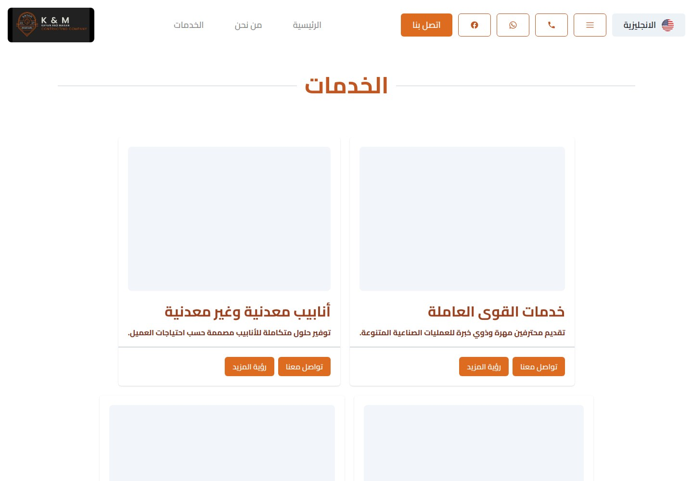

Kayan & Makan
Industrial solutions, built around your needs.

WHAT IT IS
Industrial contracting and industrial project support, including construction, maintenance, engineering, workforce, equipment, piping, safety, and supply services.
The Arabic-language homepage presents Kayan & Makan as a Jubail, Saudi Arabia-based contracting company offering industrial and construction services. It describes project management, procurement, manufacturing, safety materials, project support, operations and maintenance, fire protection, and six categorized service offerings. The homepage also displays contact details and a message form. The standalone service, contact, and linked service-detail routes visited did not render page-specific content, so those capabilities are evidenced only by the homepage’s descriptions and labels.
This case study documents what the linked website presents. Individual contribution to this project has not been confirmed.
WHAT THE WEBSITE OFFERS
- Arabic homepage hero identifies the contracting company and promotes ‘innovative and reliable industrial solutions’; a contact CTA is shown.
- About content says the company is based in Jubail and describes factory construction and maintenance and supply of quality equipment.
- An overview lists project management, procurement, manufacturing, and safety materials, each with a short explanatory description.
- Vision and mission copy is displayed, emphasizing innovative/sustainable industrial solutions and quality, cost-effective integrated solutions.
- Project-support content lists skilled workforce, equipment maintenance, bolt tightening, piping work, shutdown activities, project coordination, schedule management, quality assurance, and health-and-safety compliance.
- Operations-and-maintenance section describes experience, efficiency, and advanced techniques; a fire-protection section describes risk assessment, safety products, and work with global manufacturers.
- Homepage service cards name workforce services, metallic/non-metallic pipes, equipment rental, personal protective/safety accessories, hydro-blasting, and equipment/goods supply; each has a description, contact CTA, and ‘See more’ link.
- Homepage message form visibly has name, email, phone, and message fields plus a send button; it was not submitted.
VISITOR JOURNEY
Homepage hero/contact CTAs and repeated ‘Contact us’ links point to /contact, but that route displayed only the shared header/footer and no page-specific form or contact content in this inspection.
AUTHENTIC SCREEN CAPTURES · 11
Inside the experience.
Genuine, distinct screen captures supplied for this project. No screenshots have been fabricated or duplicated.









